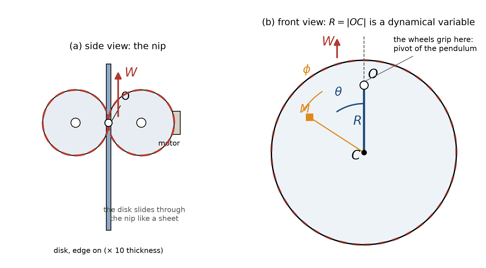
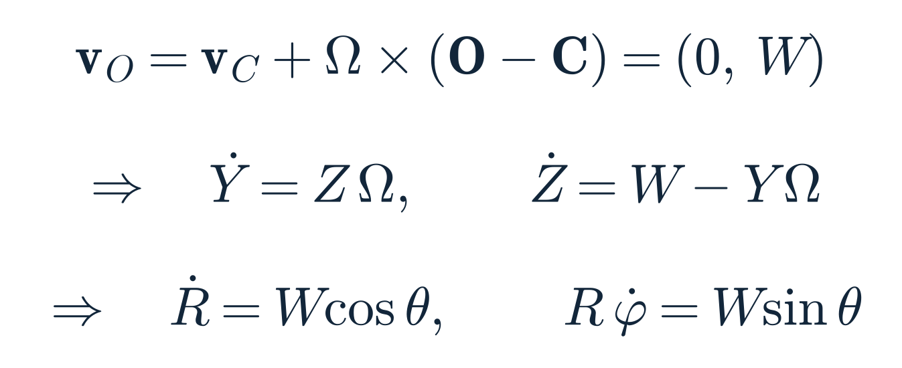
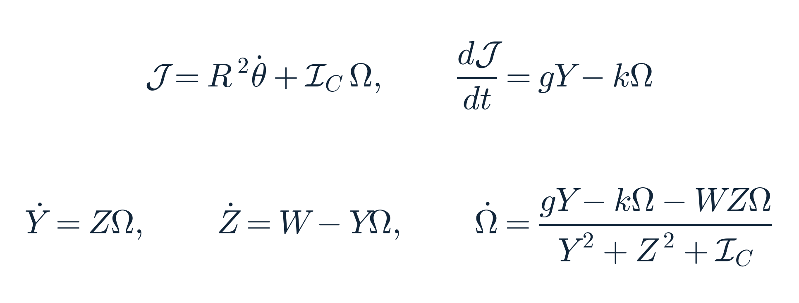
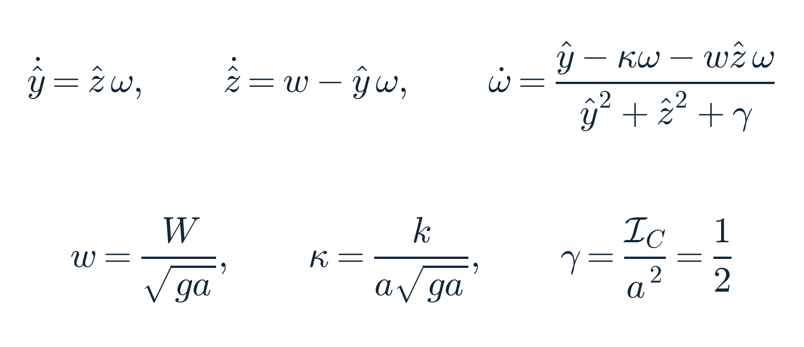
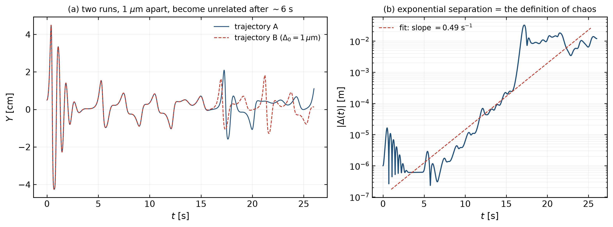
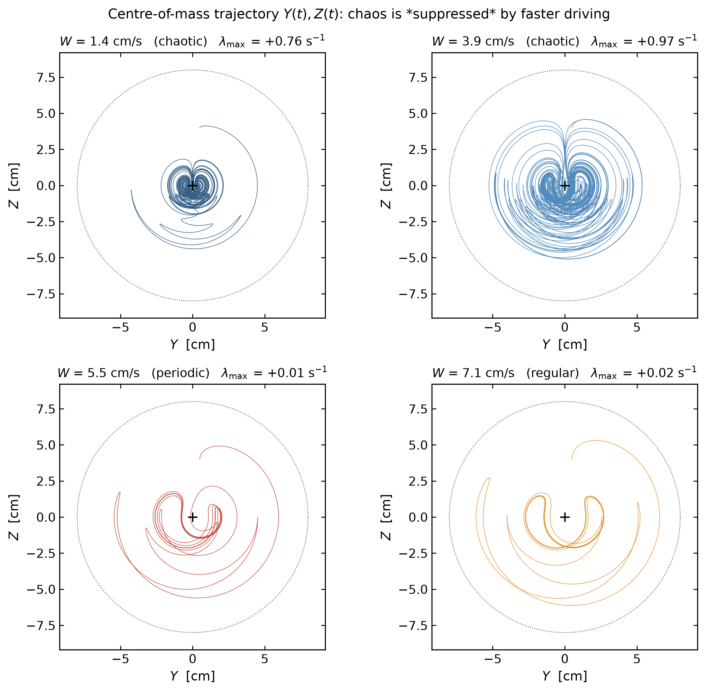
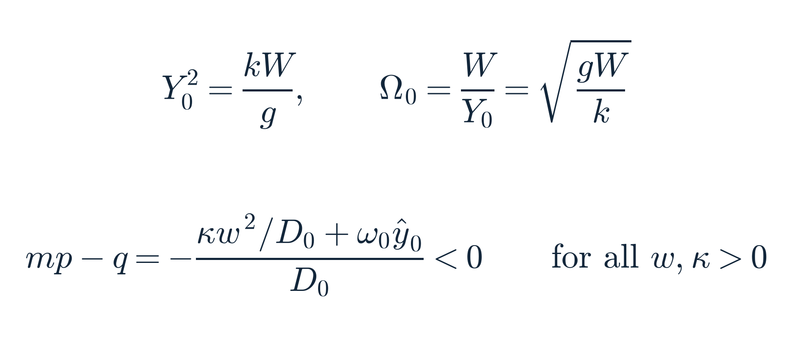
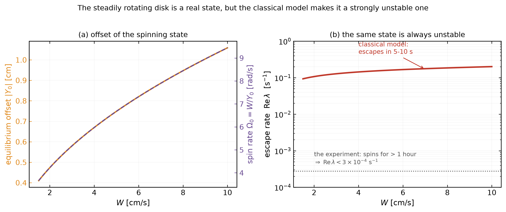

01 · 现象
三个反直觉的地方
恒定驱动，也能混沌
没有周期外力，没有往复推拉。混沌的"发动机"不是外力，而是约束—— 一个显含时间的非完整约束。
摆长是个变量
圆盘像纸一样从辊隙里被喂上去，悬挂点固定在空间、却在盘面上滑动。 所以 R = |OC| 满足 Ṙ = W cos θ，是状态量。
推得越快，越规则
转速升到 4.5 cm/s 以上，最大 Lyapunov 指数从 0.9 掉到 0.02。 两个时间尺度在打架，快的那一方赢了。

02 · 装置
一个摆长会自己变的单摆
两个橡胶轮夹住圆盘，其中一个由电机带着转，以恒定线速度 W 把圆盘往上推。 辊隙 O 在实验室里固定不动，但圆盘在动——所以"此刻被夹住的材料点"在不断更换。
结果就是等效摆长 R 可以从 0 一直变到盘的半径 a＝8 cm：
- C 在 O 下方 — 普通单摆
- C 经过 O — 摆长归零，θ 突跳 π
- C 在 O 上方 — 倒立摆
同一个装置，在三种角色之间来回切换。这就是全部复杂性的入口。
03 · 原理
三步，把"不打滑"翻译成方程
无滑约束
圆盘上此刻位于 O 的那个材料点，速度必须等于轮缘速度 (0, W)。 用刚体平面运动公式展开，两条方程就出来了。

注意：驱动力 W 不在方程右边——它写在速度约束里。 轮子对盘的作用力是"维持约束所需的任意大小"，这正是能量输入的方式。
角动量
对固定点 O 取角动量。接触力作用在 O，力臂为零、不产生力矩； 只剩重力矩 gY 与阻尼 −kΩ。消去 θ，得到三个变量的一组自治方程。

写成笛卡尔坐标是故意的：这样 R＝0 的坐标奇点自动消失， 数值积分不会被"穿越辊隙"卡住。
无量纲化
取 a 为长度、√(a/g) 为时间，整个系统只剩两个数。

这意味着：不同尺寸、质量、材料的圆盘，只要 (w, κ) 相同， 运动完全一样。这是这道题最"物理"的地方。
04 · 实验台
拖动滑块，看混沌熄灭
下面跑的就是上面那三个方程，RK4 定步长、每帧 480 Hz。左边是装置， 右边是质心轨迹在盘面上的投影（慢慢累积成相图）。右下角的 λ 是两条相距 1 μm 的轨迹的分离率——实时算出来的，不是查表。
圆盘被推出了辊隙（|OC| > a）——这是模型的边界，不是物理事件。 点"重置"，或者把初始偏移调大一点。
05 · 判据
凭什么说它是混沌
相图"看起来乱"不算证据。三个独立判据，互相印证。
Lyapunov 指数
λmax ＝ 0.76 s⁻¹：误差每 1.1 秒放大 e 倍，一个摆动周期里放大十倍。
初值敏感性
两条轨迹相差 1 μm，15 秒后差到厘米量级，完全无关。
相空间填充
低驱动时轨迹填满一片区域；高驱动时退化成有限条闭合曲线。


06 · 结果
一个否定性定理
文献里报告了一个经典模型解释不了的状态：质心停在中心偏一点的地方， Z＝0，匀速自转，能转一个多小时；从静止到不了，一碰就掉。
平衡点确实存在：Y0² ＝ kW/g，Ω0 ＝ W/Y0。 代入 W＝7 cm/s 得偏移 0.9 cm、1.3 转/秒，与实验吻合。
缺的是稳定性。线性化之后用 Routh–Hurwitz 判据，稳定要求的 mp > q 恒不成立：

只要摩擦力矩只依赖 Ω，稳态自转恒不稳定——与参数无关。
线性、二次、库仑、带静摩擦阈值的阻尼，全都救不了它。 唯一的修复方向是让约束本身允许打滑。

07 · 边界
做到了什么，没做到什么
| 复现 | 翻转循环、θ 的 ±π 突跳、混沌到规则的抑制（临界约 4.5 cm/s） |
|---|---|
| 新结果 | 稳态自转恒不稳定的定理；混沌抑制的时间尺度判据 |
| 不确定 | k 无法从第一性原理算出，是唯一的拟合参数 |
| 已知偏差 | 仿真轨道尺度偏小，文献中 R 可达 7.5 cm |
| 下一步 | 引入辊隙打滑，得到临界驱动 Wc(μ)，再用二十元的装置验证 |
后两条其实是同一个缺失物理的两个症状——这比"完美复现"更说明问题在哪。